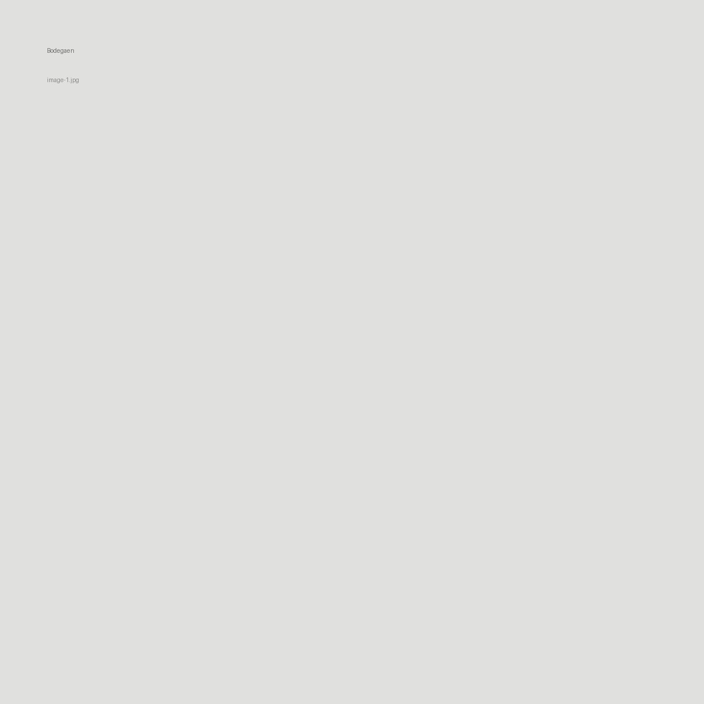

Bodegaen
Skriv en kort prosjekttekst her. Beskriv konsept, situasjon, materialer, metode og hva prosjektet undersøker. Teksten kan være på 100–200 ord.


Skriv en kort prosjekttekst her. Beskriv konsept, situasjon, materialer, metode og hva prosjektet undersøker. Teksten kan være på 100–200 ord.
